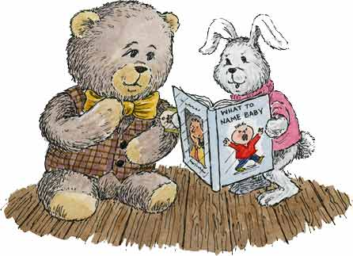

| Wolstencroft the Bear | Page 5 |
Then she began reading out the names she thought might suit Wolstencroft.
"What about Adrian?" she suggested. "It's a lovely name, very dignified."
But Wolstencroft shook his head.
"Well, what do you think of Bernard? It actually means brave as a bear."
But Wolstencroft was not impressed.
So Rita left the B's and began flipping through the pages of the book, reading out a name for each letter of the alphabet starting with C.

"Clive, David, Edwin, Francis, Graham, Howard, Ivan, Jeremy, Keith, Leonard, Miles, Nathan, Oliver, Percy, Quentin, Rodney, Selwyn, Timothy, Ulysses, Vincent, Winston."
And here she stopped because the names beginning with X, Y and Z: Xavier, Yves and Zachary, were too difficult to pronounce. There was no sense in taking a name that was even harder to say than the one he already had.
But Wolstencroft didn't like any of the names she suggested. At least not for himself.
"They're all fine names," he said, popping a piece of chocolate into his mouth then dabbing his mouth with a napkin. "But, they're just not me."
Rita stayed lost in thought for a very long time, tapping her cheek with her finger. And it wasn't until the big clock behind the pharmacy counter struck ten that she finally spoke.
"I think I have the answer," she said. "You could have a name that's easy to say and keep your name at the same time."
Wolstencroft looked puzzled. "That doesn't make sense," he replied.
"Oh, but it does," Rita insisted. "You only have to shorten the name you have."
Wolstencroft began to look interested. "You mean I would still be Wolstencroft, but I'd have a shorter, easier to pronounce name for those who preferred it."
"That's right," she cried excitedly. "And you have such a long name that there are several choices." And she began ticking them off on her fingers.
"Woolly, Wolsten, Sten or Croft. Which one do you like best?"
Wolstencroft thought very carefully, mulling over each name in his mind.
"I like Croft," he decided at last. It's very dignified.
Rita looked disappointed. "I like Woolly best," she said. "It's so cuddly and friendly. And you are woolly, you have a lovely thick coat."
Wolstencroft looked uncertain.
"You would still be Wolstencroft," Rita reminded him. "And that's a very dignified name indeed. Woolly would be a nice contrast."
They talked it over for well into the night as this was a very important decision. There are very few things as important as one's name.
|
TURN THE PAGE | |
|||
| Go to page: 1 - 2 - 3 - 4 - 5 - 6 - 7 | |||||
| Back to Children's Storybooks Online | |||||
| Copyright ©2003 Karen Lewis. Illustrations copyright ©2003 Carol Moore. All rights reserved. 031911430 | |||||